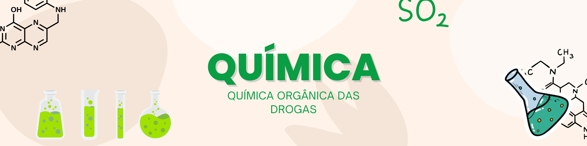

Química Orgânica das Drogas
Ir para: Drogas psicotrópicas
Química Orgânica: Elementos do Nosso Cotidiano
Desde os tempos antigos, substâncias químicas vêm sendo utilizadas por diferentes civilizações, seja para
rituais, cura ou caça.
Atualmente, muitas dessas substâncias — naturais ou sintéticas — são conhecidas como drogas
psicotrópicas , pois atuam no
sistema nervoso central , alterando funções psíquicas e comportamentais.
drogas como álcool, nicotina, maconha, cocaína, ecstasy e inalantes possuem funções orgânicas
específicas em suas estruturas químicas,
álcoois, éteres, aminas, cetonas e ácidos carboxílicos. Estudar essas funções no contexto das drogas ajuda a
entender seus efeitos no corpo humano,
além de aproximar o conteúdo da Química do cotidiano dos estudantes, promovendo aprendizagem
significativa e
conscientização social .
Tais drogas podem ser de origem natural, obtidas em determinadas plantas, em animais e em alguns minerais, ou
sintéticas, fabricadas em laboratório, exigindo para isso técnicas e metodologias especiais. As drogas de abuso
também podem ser classificadas segundo sua ação, ou seja, seu efeito farmacológico: depressoras, estimuladoras e
perturbadoras. As drogas depressoras são aquelas que atenuam as atividades cerebrais e podem produzir
relaxamento, sedação, sonolência, anestesia e coma. Dentre as substâncias lícitas destaca-se o álcool; entre as
ilícitas, a maconha e o GHS. Drogas estimuladoras são substâncias que atuam por aumentar a atividade do cérebro;
produzem euforia, aumento de energia e do estado de alerta. Dentre as substâncias lícitas destaca-se a nicotina;
entre as ilícitas, a cocaína. Por fim, as drogas perturbadoras são aquelas que agem modificando qualitativamente
a atividade cerebral, ou seja, o cérebro passa a funcionar fora do seu normal e o usuário fica com a mente
perturbada; como exemplo, tem-se o LSD e ecstasy
O Uso de Substâncias Químicas na Antiguidade
Na antiguidade, o uso de substâncias químicas para tratamentos e rituais era uma prática comum. O homem, em busca
de cura para doenças e de bem-estar, recorria a elementos naturais disponíveis em seu ambiente, como plantas,
minerais e substâncias de origem animal. O tratamento de doenças na antiguidade estava muito relacionado a
crenças espirituais, religiosas e empíricas, uma vez que a ciência como a conhecemos hoje ainda não estava
desenvolvida.
Por exemplo, na civilização egípcia, já se fazia uso de bebidas fermentadas, como o vinho, que, além de ser
utilizado em rituais festivos, também servia como um remédio rudimentar. Na Grécia Antiga, o ópio era utilizado
com fins medicinais, principalmente para tranquilizar e aliviar a dor dos enfermos. O uso do ópio foi amplamente
documentado, sendo uma das primeiras substâncias conhecidas com efeitos sedativos. De maneira similar, os
ameríndios usavam substâncias extraídas de plantas, como a curare, para envenenar ou imobilizar suas presas, o
que demonstra o conhecimento da química natural.
Esses usos primitivos de substâncias químicas eram, muitas vezes, experimentais e baseados em observações
empíricas. Porém, o conhecimento era limitado e muitas vezes as substâncias usadas também traziam efeitos
colaterais graves, sem a noção de controle sobre as dosagens e interações entre os compostos.
Desenvolvimento da Química e da Farmácia
À medida que as civilizações evoluíram, o estudo das substâncias e de suas reações químicas foi ganhando força,
embora os tratamentos continuassem a ser baseados em práticas naturais e empíricas até o início da Idade
Moderna. Foi só com o desenvolvimento da ciência da Química e da Farmácia, entre os séculos 17 e 18, que se
passou a estudar de forma mais sistemática as propriedades das substâncias, seus efeitos no corpo humano e suas
aplicações no tratamento de doenças.
A partir daí, a ciência avançou rapidamente no sentido de isolar substâncias ativas de plantas, sintetizar novos
compostos e transformar o tratamento de doenças com base em métodos científicos mais rigorosos, em vez de
confiar apenas na intuição ou na religião.
Portanto, a evolução do uso das substâncias químicas no tratamento de doenças começou de forma rudimentar, com
práticas empíricas e misturadas com rituais, mas ao longo do tempo evoluiu para a base científica moderna da
farmacologia, onde a química orgânica desempenha um papel essencial.
O Lado Positivo das Drogas: Remédios que Salvam Vidas
Embora o termo "droga" muitas vezes seja associado a substâncias ilegais, no contexto farmacêutico, drogas são
compostos químicos que, quando usados corretamente, têm o poder de tratar, aliviar e até curar doenças. Em
medicamentos, essas substâncias são estudadas, dosadas e combinadas com precisão para garantir eficácia e
segurança. Drogas como o paracetamol, a insulina e a amoxicilina são exemplos de princípios ativos que melhoram
a qualidade de vida de milhões de pessoas ao redor do mundo. A ciência da química orgânica é fundamental nesse
processo, permitindo desenvolver remédios cada vez mais eficazes e acessíveis.
Drogas psicotrópicas, efeitos e funções orgânicas presentes
√Ålcoolüç∫
é uma droga psicotrópica lícita, ou seja, liberada por lei. O processo mais empregado no Brasil para a sua
produção é pela fermentação alcoólica da cana-de-açúcar, isto é, a partir de um processo biológico .
Maconhaüåø
é derivada de uma planta chamada Cannabis sativa. O tetraidrocanabinol (THC) é o princípio ativo responsável
pelos
efeitos da maconha, apesar de sua ação provavelmente envolver outros canabinoides, canabidiol e terpenoides. Na
estrutura química do THC encontramos vários grupos funcionais, entre eles: hidrocarbonetos aromáticos, alceno,
álcool e éter cíclico. Os éteres são compostos em que dois substituintes alquilas estão ligados a um oxigênio.
Já a
função orgânica hidrocarboneto é caracterizada por compostos que possuem em sua estrutura somente átomos de
carbono
e hidrogênio e podem ser classificados de acordo com o tipo de ligação existente entre os átomos de carbono:
alcanos
(ligações simples); alcenos (ligações duplas); e aromáticos.
Inalantesüí®
trata-se de substâncias normalmente, solventes voláteis – que são consumidas na aspiração pelo nariz ou pela
boca.
Exemplos: tolueno, n-hexano, éter dietílico e clorofórmio. O inalante “cheirinho da loló”, um dos mais
conhecidos no
Brasil, é preparado com a mistura de éter e clorofórmio. A “cola de sapateiro”, produzida comercialmente, é
consumida também como droga de abuso e é constituída por tolueno e n-hexano.
Nicotinaüö¨
é um alcaloide presente na folha de tabaco; além disso é a substância mais ativa no fumo do tabaco. O consumo de
cigarros de tabaco é lícito, apesar de causar grandes danos para o usuário.
Cetamina (Special K)üíä
Originalmente, foi sintetizada para ser usada como anestésico veterinário e humano. Seu uso como droga de abuso
começou a partir de desvios de estoques farmacêuticos e de clínicas veterinárias. É uma droga levemente
alucinógena,
depressora do SNC (Bouer; Iturrusgarai, 2004).
Ecstasy (MDMA)üéâ
Ecstasy é uma droga psicotrópica sintética; originalmente foi produzida para ser utilizada como moderador de
apetite.
Entretanto, atualmente, é consumida como droga na forma de comprimidos com fins recreativos em festas e raves
(Cebrid, 2018).
Coca√≠na e Cracküí•
A cocaína é encontrada nas folhas de coca, um arbusto sul-americano da espécie Erythroxylum coca. O tratamento
químico das folhas de coca é capaz de extrair um sal, o cloridrato de cocaína. O crack é uma forma diferente de
administração da cocaína, ou seja, encontra-se na forma neutra (Fonseca, 2013).
Na cocaína é possível identificar a presença do íon amônio e dos grupos éster. No crack – forma neutra –
identifica-se amina terciária e, do mesmo modo, grupos ésteres. Os ésteres são derivados dos ácidos
carboxílicos, têm um grupo alcóxido (-OR) em vez da hidroxila (-OH) presente no ácido carboxílico (Bruice,
2006).
LSD üîÆ
LSD: é uma droga sintética, um derivado químico do ácido lisérgico que ocorre no fungo do cereal ergot (Rang;
Dale, 2011). O LSD é um dos mais potentes alucinógenos conhecidos – seus efeitos ocorrem em doses baixas, como
20 µg (Schmitz et al., 1997).